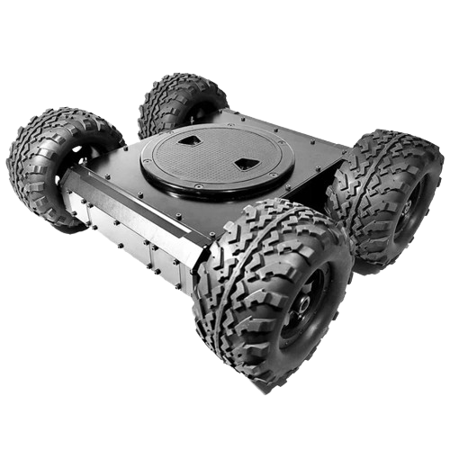
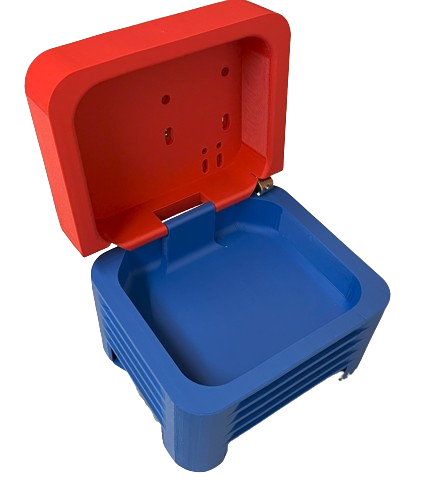
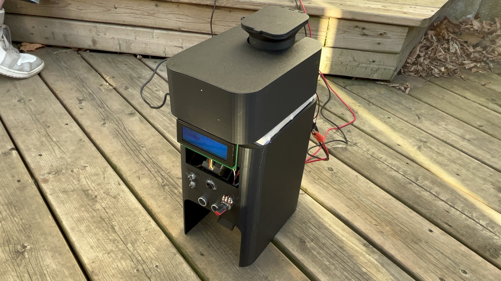
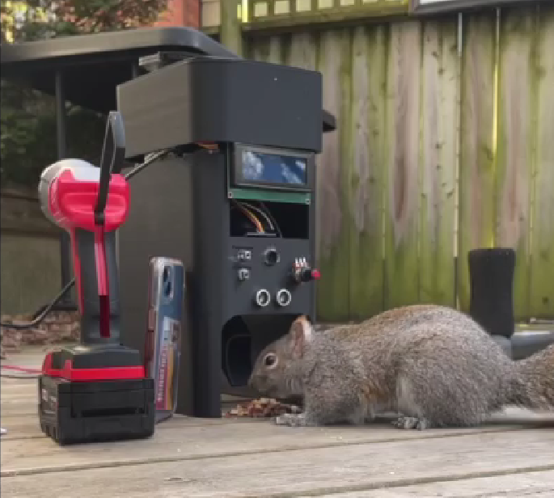
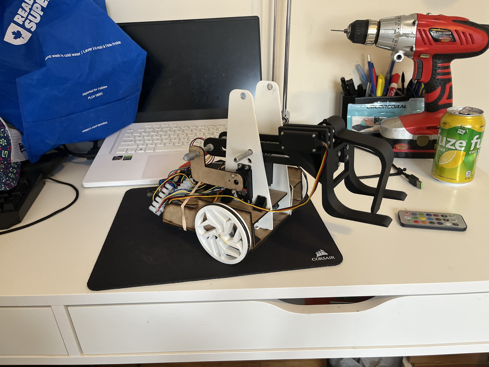
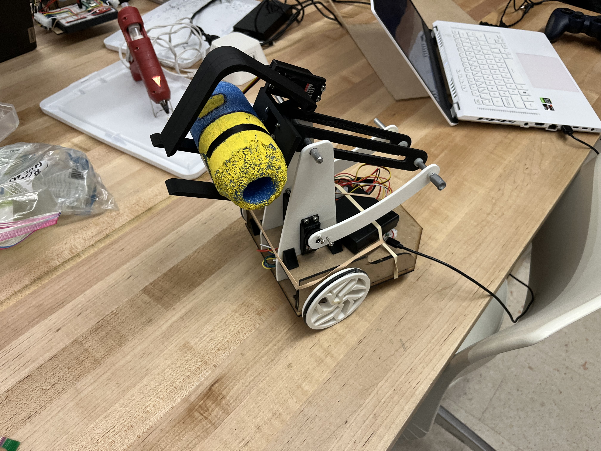
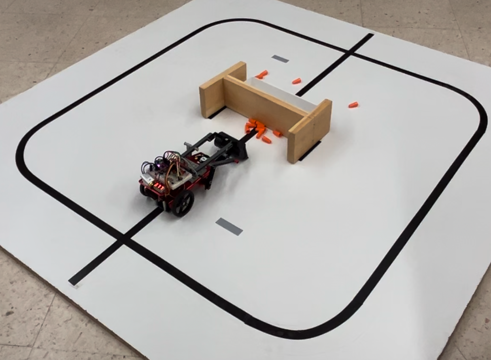
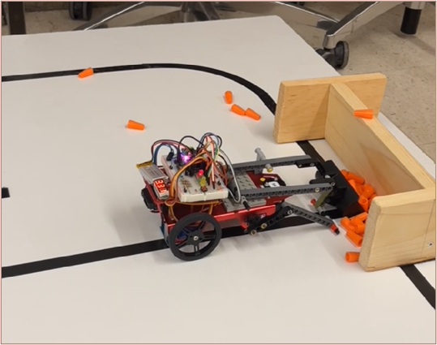
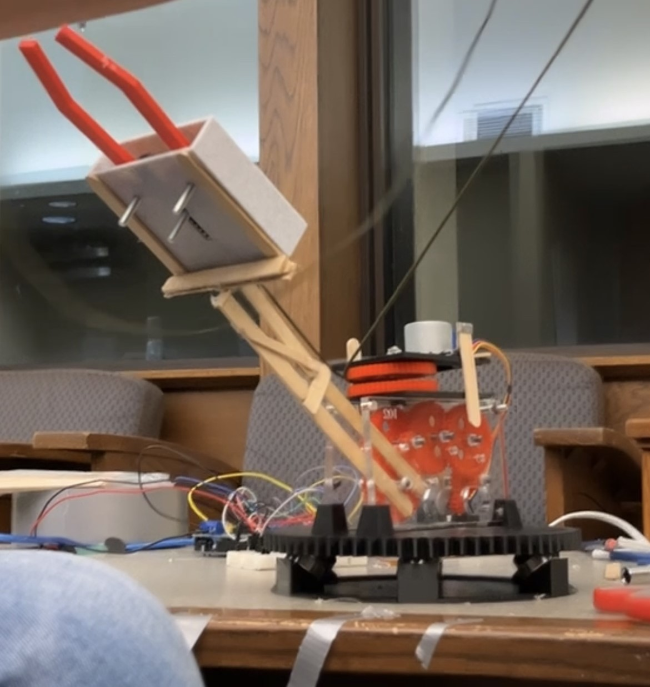
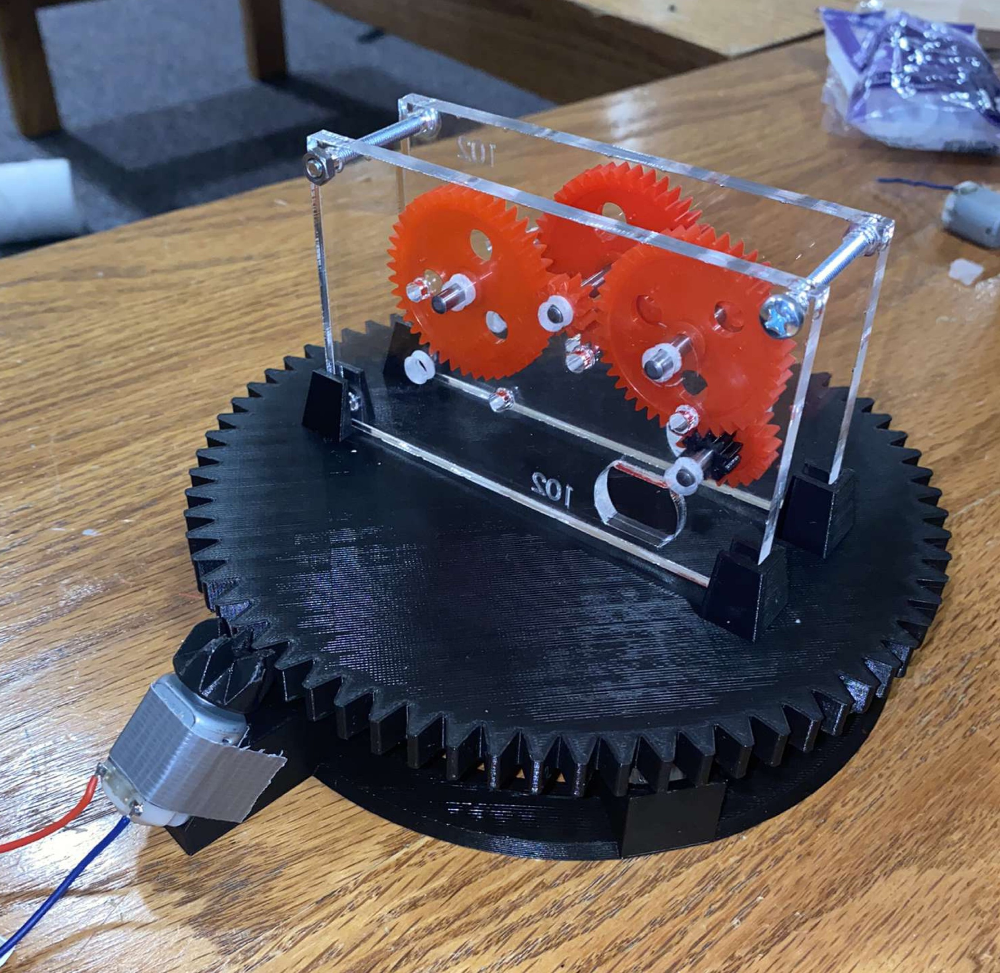

.png)

The LifeBot project aimed to revolutionize emergency response capabilities, particularly in scenarios such as cardiac arrests, by providing swift access to life-saving equipment in indoor environments where traditional response times may be compromised, specifically in indoor settings where defibrillators are often scattered and difficult-to-locate.
The software development involved several key components, starting with the controller. A PI (Proportional-Integral) controller was implemented to dynamically adjust motor PWM (Pulse Width Modulation) commands, allowing the robot to respond proportionally to differences between desired and actual wheel speeds. The main control loop calculated wheel angular rates from encoder data and adjusted PWM signals to match the vehicle's speed with the target speed. Real-time monitoring was facilitated through the Arduino IDE's serial monitor and plotter, providing insights into wheel velocities. To address discrepancies in wheel speeds due to motor deficiencies, an additional PI system was implemented to minimize errors between the left and right wheel speeds, ensuring accurate trajectory control.
For navigation, the LifeBot utilized ROS2 (Robot Operating System 2) packages. The SLAM (Simultaneous Localization and Mapping) package built a 2D map and determined the robot's position using a laser scanner (RPLIDAR) and an odometry system. The NAV2 package created a cost map, calculated the lowest cost path to the target location, and sent navigation instructions to ROS2 Control. ROS2 Control integrated a differential drive controller, standardizing control and state information and enabling fast data transmission. Communication between the Arduino and Raspberry Pi was managed via ROS2, with internet communications handled by SSH (Secure Shell Protocol) to offload computationally intensive tasks to a base station. Serial communications connected the Arduino to motors, encoders, and sensors, facilitating real-time data exchange and control commands.
The proposed solution features a lightweight chassis with a mechanically optimized hinge mechanism. This chassis is mounted on an existing frame using nut and bolt fasteners, allowing for easy installation and removal. PLA plastic was chosen as the material for its cost-effectiveness and structural integrity, while the hinge mechanism ensures easy access to the AED device in emergencies.
The chassis underwent an iterative design process using SolidWorks for Computer-Aided Design (CAD), which was crucial in refining and optimizing the design. Initial sketches and models were created to conceptualize the mounting solution. These preliminary designs were evaluated and modified to address potential issues such as weight distribution, ease of access, and structural integrity. Each iteration involved adjustments to the geometry and material properties to enhance the overall performance and functionality of the chassis.
The chassis underwent rigorous testing through Finite Element Analysis (FEA) to confirm its ability to withstand expected mechanical stresses. SolidWorks built-in simulation tools were employed to conduct various simulations, including stress analysis using Von Mises criteria, displacement analysis, and strain analysis. The results demonstrated the chassis's robustness and reliability: the Von Mises stress ranged from 9.644e+01 to 6.376e+06 N/m², the maximum displacement was 2.530 mm, and the equivalent strain ranged from 3.77e-08 to 2.125e-03. These findings confirmed the chassis’s ability to endure operational mechanical loads while maintaining the AED device securely in place and ready for immediate deployment.
The LifeBot project aimed to revolutionize emergency response capabilities, particularly in scenarios such as cardiac arrests, by providing swift access to life-saving equipment in indoor environments where traditional response times may be compromised, specifically in indoor settings where defibrillators are often scattered and difficult-to-locate.Click here to read more
The software development involved several key components, starting with the controller. A PI (Proportional-Integral) controller was implemented to dynamically adjust motor PWM (Pulse Width Modulation) commands, allowing the robot to respond proportionally to differences between desired and actual wheel speeds. The main control loop calculated wheel angular rates from encoder data and adjusted PWM signals to match the vehicle's speed with the target speed. Real-time monitoring was facilitated through the Arduino IDE's serial monitor and plotter, providing insights into wheel velocities. To address discrepancies in wheel speeds due to motor deficiencies, an additional PI system was implemented to minimize errors between the left and right wheel speeds, ensuring accurate trajectory control.
For navigation, the LifeBot utilized ROS2 (Robot Operating System 2) packages. The SLAM (Simultaneous Localization and Mapping) package built a 2D map and determined the robot's position using a laser scanner (RPLIDAR) and an odometry system. The NAV2 package created a cost map, calculated the lowest cost path to the target location, and sent navigation instructions to ROS2 Control. ROS2 Control integrated a differential drive controller, standardizing control and state information and enabling fast data transmission. Communication between the Arduino and Raspberry Pi was managed via ROS2, with internet communications handled by SSH (Secure Shell Protocol) to offload computationally intensive tasks to a base station. Serial communications connected the Arduino to motors, encoders, and sensors, facilitating real-time data exchange and control commands.
The proposed solution features a lightweight chassis with a mechanically optimized hinge mechanism. This chassis is mounted on an existing frame using nut and bolt fasteners, allowing for easy installation and removal. PLA plastic was chosen as the material for its cost-effectiveness and structural integrity, while the hinge mechanism ensures easy access to the AED device in emergencies.
The chassis underwent an iterative design process using SolidWorks for Computer-Aided Design (CAD), which was crucial in refining and optimizing the design. Initial sketches and models were created to conceptualize the mounting solution. These preliminary designs were evaluated and modified to address potential issues such as weight distribution, ease of access, and structural integrity. Each iteration involved adjustments to the geometry and material properties to enhance the overall performance and functionality of the chassis.
The chassis underwent rigorous testing through Finite Element Analysis (FEA) to confirm its ability to withstand expected mechanical stresses. SolidWorks built-in simulation tools were employed to conduct various simulations, including stress analysis using Von Mises criteria, displacement analysis, and strain analysis. The results demonstrated the chassis's robustness and reliability: the Von Mises stress ranged from 9.644e+01 to 6.376e+06 N/m², the maximum displacement was 2.530 mm, and the equivalent strain ranged from 3.77e-08 to 2.125e-03. These findings confirmed the chassis’s ability to endure operational mechanical loads while maintaining the AED device securely in place and ready for immediate deployment.

The Sensor Suite V3 project focuses on redesigning and fabricating a modular, compact sensor mounting solution optimized for autonomous vehicle applications. This redesign aims to enhance functionality by incorporating accurate sensor positioning, integrated waterproofing (meeting at least an IPX4 rating), and a localized power delivery system to reduce cabling complexity. The suite is designed to house a range of sensors, including multiple LiDARs with vibration-dampening mounts, short- and long-range cameras, and mounting points for GNSS and scoring antennas.
The project began with a full mechanical redesign focused on modularity and compactness, using CAD tools to ensure precise sensor alignment and ease of assembly. Each sensor was carefully positioned to maximize field of view and minimize blind spots, with vibration-dampening mounts implemented for the LiDAR units to improve data fidelity. Waterproofing was achieved through gasketed enclosures, sealed connectors, and the use of corrosion-resistant materials, meeting at least an IPX4 rating. A localized power delivery system was integrated directly into the suite to simplify the wiring architecture and reduce the number of long cables routed throughout the vehicle. Custom PCBs and watertight connectors were used to centralize power distribution and improve reliability. Mounting brackets for GNSS receivers and scoring antennas were added as modular components to allow flexible positioning and future upgrades.
The final Sensor Suite V3 significantly improved robustness, ease of installation, and system reliability. The integrated waterproofing successfully protected electronics during outdoor testing in wet conditions. The localized power system reduced cable length by over 50%, minimizing signal noise and easing maintenance. The modular design allowed for quick sensor swaps and streamlined debugging, which accelerated development cycles. Overall, the redesign enhanced the vehicle’s sensing capabilities while making the suite more maintainable, scalable, and competition-ready.
The Sensor Suite V3 project focuses on redesigning and fabricating a modular, compact sensor mounting solution optimized for autonomous vehicle applications. Click here to read more
This redesign aims to enhance functionality by incorporating accurate sensor positioning, integrated waterproofing (meeting at least an IPX4 rating), and a localized power delivery system to reduce cabling complexity. The suite is designed to house a range of sensors, including multiple LiDARs with vibration-dampening mounts, short- and long-range cameras, and mounting points for GNSS and scoring antennas.
The project began with a full mechanical redesign focused on modularity and compactness, using CAD tools to ensure precise sensor alignment and ease of assembly. Each sensor was carefully positioned to maximize field of view and minimize blind spots, with vibration-dampening mounts implemented for the LiDAR units to improve data fidelity. Waterproofing was achieved through gasketed enclosures, sealed connectors, and the use of corrosion-resistant materials, meeting at least an IPX4 rating. A localized power delivery system was integrated directly into the suite to simplify the wiring architecture and reduce the number of long cables routed throughout the vehicle. Custom PCBs and watertight connectors were used to centralize power distribution and improve reliability. Mounting brackets for GNSS receivers and scoring antennas were added as modular components to allow flexible positioning and future upgrades.
The final Sensor Suite V3 significantly improved robustness, ease of installation, and system reliability. The integrated waterproofing successfully protected electronics during outdoor testing in wet conditions. The localized power system reduced cable length by over 50%, minimizing signal noise and easing maintenance. The modular design allowed for quick sensor swaps and streamlined debugging, which accelerated development cycles. Overall, the redesign enhanced the vehicle’s sensing capabilities while making the suite more maintainable, scalable, and competition-ready.


The Automated Squirrel Feeder project was designed to provide an innovative solution for managing backyard squirrel feeding, focusing on convenience, precision, and animal safety. Click here to read more
The Automated Squirrel Feeder successfully achieved its design goals, demonstrating precise and reliable feeding capabilities in real-world backyard conditions. The system utilized advanced technology to ensure accurate portion control and secure feeding access. A stepper motor-driven Archimedes screw mechanism, paired with a force-sensitive resistor, enabled precise portion dispensing, while software provided real-time feedback to maintain accuracy within ±0.1 grams. The timer mechanism, managed through a user-friendly interface with an LCD display, rotary potentiometer, and push buttons, allowed users to schedule feeding times to the minute, offering flexibility and convenience.
One of the standout features was the integration of a camera and squirrel recognition software. The system employed an Arducam module connected to a Raspberry Pi, capturing images whenever motion was detected by the ultrasonic sensor. These images were processed using a machine learning model trained to identify squirrels, ensuring only the intended animals could access the food. This combination of hardware and software effectively prevented food theft by other animals, even in outdoor conditions, while minimizing false positives.
The Automated Squirrel Feeder successfully met its design objectives, providing precise and reliable feeding in a real-world backyard setting. It consistently dispensed accurate food portions, prevented food theft using squirrel identification technology, and ensured safety with enclosed mechanisms and secure food storage. The user-friendly interface allowed for easy setup and control, while the system's cost-effective components kept the design affordable. Robust testing confirmed the feeder's effectiveness, accuracy, and ease of maintenance, demonstrating its practical application and innovative approach to automated feeding solutions.
The Automated Squirrel Feeder project was designed to provide an innovative solution for managing backyard squirrel feeding, focusing on convenience, precision, and animal safety.
The Automated Squirrel Feeder successfully achieved its design goals, demonstrating precise and reliable feeding capabilities in real-world backyard conditions. The system utilized advanced technology to ensure accurate portion control and secure feeding access. A stepper motor-driven Archimedes screw mechanism, paired with a force-sensitive resistor, enabled precise portion dispensing, while software provided real-time feedback to maintain accuracy within ±0.1 grams. The timer mechanism, managed through a user-friendly interface with an LCD display, rotary potentiometer, and push buttons, allowed users to schedule feeding times to the minute, offering flexibility and convenience.
One of the standout features was the integration of a camera and squirrel recognition software. The system employed an Arducam module connected to a Raspberry Pi, capturing images whenever motion was detected by the ultrasonic sensor. These images were processed using a machine learning model trained to identify squirrels, ensuring only the intended animals could access the food. This combination of hardware and software effectively prevented food theft by other animals, even in outdoor conditions, while minimizing false positives.
The Automated Squirrel Feeder successfully met its design objectives, providing precise and reliable feeding in a real-world backyard setting. It consistently dispensed accurate food portions, prevented food theft using squirrel identification technology, and ensured safety with enclosed mechanisms and secure food storage. The user-friendly interface allowed for easy setup and control, while the system's cost-effective components kept the design affordable. Robust testing confirmed the feeder's effectiveness, accuracy, and ease of maintenance, demonstrating its practical application and innovative approach to automated feeding solutions.

A two-wheeled mobile robot designed to autonomously navigate a course and manipulate dinosaur models using a custom-built sliding arm. The robot combined a differential drive base for mobility with a crank-slider-inspired mechanism for precise object manipulation.Click here to read more
The robot was built using a Raspberry Pi Pico W, encoder-equipped DC motors, and servo-actuated mechanisms. Mechanical components were designed and iterated in SolidWorks, with motion simulation validated using linkage software. Control was achieved through PI-based speed regulation and encoder-based odometry. The arm mechanism was optimized for reach and torque, and all major parts were 3D printed or laser-cut.
Integral to the arm's operation is the gearbox mechanism, comprising gears, rods, and motors. The gearbox transmits rotational motion and torque from the DC motors to facilitate smooth and efficient movement of the arm's gripper mechanism. Additionally, the incorporation of a stepper motor enables precise control and manipulation of objects, enhancing the arm's functionality and usability. Through iterative design iterations and rigorous testing, the project successfully developed a practical and efficient solution. CAD software was utilized to refine and optimize the arm's geometry, ensuring structural integrity and mechanical robustness. Furthermore, simulation techniques, such as stress analysis and displacement analysis, were employed to validate the arm's performance under operational loads, confirming its reliability and effectiveness in assisting individuals with grip strength limitations.
The robot successfully demonstrated autonomous navigation and reliable object manipulation during the final competition. Despite a hardware issue during the qualifying round, the robot performed well in manual mode and advanced past the first round. Its robust mechanical design and consistent autonomous performance in testing contributed to the team placing in the top 10 of the class. The project validated the design approach and control strategies while highlighting areas for improvement, such as torque optimization and electrical reliability.
A two-wheeled mobile robot designed to autonomously navigate a course and manipulate dinosaur models using a custom-built sliding arm. The robot combined a differential drive base for mobility with a crank-slider-inspired mechanism for precise object manipulation.
The robot was built using a Raspberry Pi Pico W, encoder-equipped DC motors, and servo-actuated mechanisms. Mechanical components were designed and iterated in SolidWorks, with motion simulation validated using linkage software. Control was achieved through PI-based speed regulation and encoder-based odometry. The arm mechanism was optimized for reach and torque, and all major parts were 3D printed or laser-cut.
The robot successfully demonstrated autonomous navigation and reliable object manipulation during the final competition. Despite a hardware issue during the qualifying round, the robot performed well in manual mode and advanced past the first round. Its robust mechanical design and consistent autonomous performance in testing contributed to the team placing in the top 10 of the class. The project validated the design approach and control strategies while highlighting areas for improvement, such as torque optimization and electrical reliability.



A fully autonomous mobile robot designed to replicate the functionalities of self-driving digging trucks which are used in modern day mining operations. The primary goal of this project was to demonstrate the viability of autonomous technology in enhancing efficiency and safety within mining environments.Click here to read more
To accomplish this, a line-following navigation algorithm utilizing a PID controller for precise line-following capabilities was developed. By implementing the Ziegler-Nichols method for tuning the PID controller, the robot was able to navigate predefined paths with high accuracy. An open-loop control was also implemented to handle intersections of the line, ensuring that the robot could continue its path seamlessly even at complex junctures.
The hardware setup played a crucial role in the robot's functionality. The configuration included an ItsyBitsy microcontroller, LED indicators, buttons, reflective object sensors, DC motors, an infrared distance sensor, and servo motors. This hardware facilitated autonomous navigation and task execution by providing real-time sensor data to the control algorithms. The integration of these components allowed MiniBot to perform its tasks efficiently, demonstrating the importance of a well-coordinated hardware-software system in achieving autonomous operation.
The final prototype was able to achieve an 80% success rate in item collection and transportation, effectively simulating the functions of autonomous digging trucks in mining applications.
A fully autonomous mobile robot designed to replicate the functionalities of self-driving digging trucks which are used in modern day mining operations. The primary goal of this project was to demonstrate the viability of autonomous technology in enhancing efficiency and safety within mining environments.
To accomplish this, a line-following navigation algorithm utilizing a PID controller for precise line-following capabilities was developed. By implementing the Ziegler-Nichols method for tuning the PID controller, the robot was able to navigate predefined paths with high accuracy. An open-loop control was also implemented to handle intersections of the line, ensuring that the robot could continue its path seamlessly even at complex junctures.
The hardware setup played a crucial role in the robot's functionality. The configuration included an ItsyBitsy microcontroller, LED indicators, buttons, reflective object sensors, DC motors, an infrared distance sensor, and servo motors. This hardware facilitated autonomous navigation and task execution by providing real-time sensor data to the control algorithms. The integration of these components allowed MiniBot to perform its tasks efficiently, demonstrating the importance of a well-coordinated hardware-software system in achieving autonomous operation.
The final prototype was able to achieve an 80% success rate in item collection and transportation, effectively simulating the functions of autonomous digging trucks in mining applications.


The purpose of the project was to engineer a robotic arm attachment for wheelchairs, specifically designed to empower individuals with limited grip strength in manipulating objects with ease and precision. This solution aims to enhance autonomy and quality of life by enabling users to perform daily tasks, such as handling mobile phones, independently.
The project required meticulous selection and integration of various components into the arm's design, including craft sticks for structural support, wire connectors for electrical connections, and an Arduino Uno as the central control unit. These components were strategically chosen to ensure optimal performance and reliability, meeting the specific requirements of the arm's functionality.
Integral to the arm's operation is the gearbox mechanism, comprising gears, rods, and motors. The gearbox transmits rotational motion and torque from the DC motors to facilitate smooth and efficient movement of the arm's gripper mechanism. Additionally, the incorporation of a stepper motor enables precise control and manipulation of objects, enhancing the arm's functionality and usability. Through iterative design iterations and rigorous testing, the project successfully developed a practical and efficient solution. CAD software was utilized to refine and optimize the arm's geometry, ensuring structural integrity and mechanical robustness. Furthermore, simulation techniques, such as stress analysis and displacement analysis, were employed to validate the arm's performance under operational loads, confirming its reliability and effectiveness in assisting individuals with grip strength limitations.
The Arduino Uno was chosen to interface with sensors, motors, and other electronic components, enabling seamless communication and coordination within the robotic arm system. Its ability to process input signals and execute predefined instructions allows for intuitive user control, enhancing the arm's usability and accessibility.
The purpose of the project was to engineer a robotic arm attachment for wheelchairs, specifically designed to empower individuals with limited grip strength in manipulating objects with ease and precision. This solution aims to enhance autonomy and quality of life by enabling users to perform daily tasks, such as handling mobile phones, independently.Click here to read more
The project required meticulous selection and integration of various components into the arm's design, including craft sticks for structural support, wire connectors for electrical connections, and an Arduino Uno as the central control unit. These components were strategically chosen to ensure optimal performance and reliability, meeting the specific requirements of the arm's functionality.
Integral to the arm's operation is the gearbox mechanism, comprising gears, rods, and motors. The gearbox transmits rotational motion and torque from the DC motors to facilitate smooth and efficient movement of the arm's gripper mechanism. Additionally, the incorporation of a stepper motor enables precise control and manipulation of objects, enhancing the arm's functionality and usability. Through iterative design iterations and rigorous testing, the project successfully developed a practical and efficient solution. CAD software was utilized to refine and optimize the arm's geometry, ensuring structural integrity and mechanical robustness. Furthermore, simulation techniques, such as stress analysis and displacement analysis, were employed to validate the arm's performance under operational loads, confirming its reliability and effectiveness in assisting individuals with grip strength limitations.
The Arduino Uno was chosen to interface with sensors, motors, and other electronic components, enabling seamless communication and coordination within the robotic arm system. Its ability to process input signals and execute predefined instructions allows for intuitive user control, enhancing the arm's usability and accessibility.
While individual subsystems showed success, the overall prototype failed to meet project requirements. This was due to the inconsistent gearbox performance, slow gripper motion, and structural limitations of the popsicle stick truss.
Future iterations of the robot have commenced with a focus on strengthening connections, optimizing motor speed, and reducing friction in the gripper system for increased efficiency and functionality.